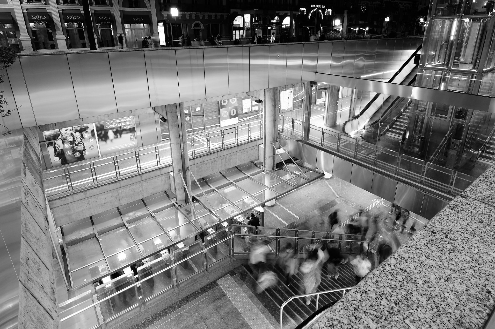
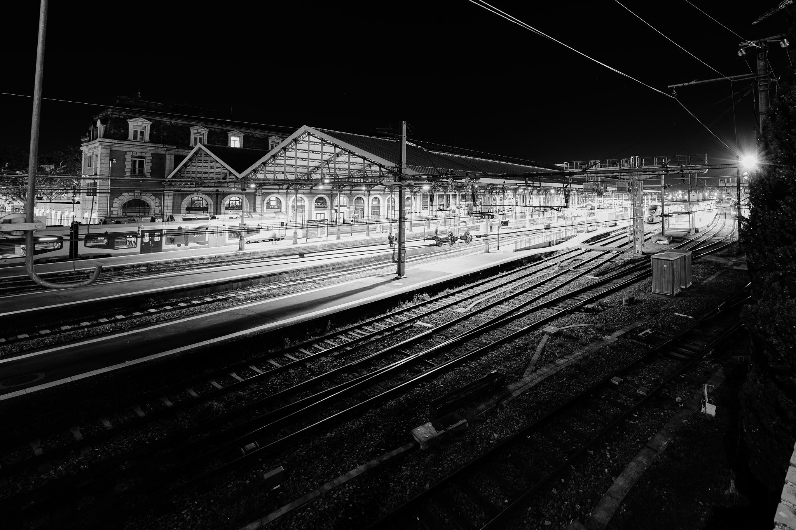
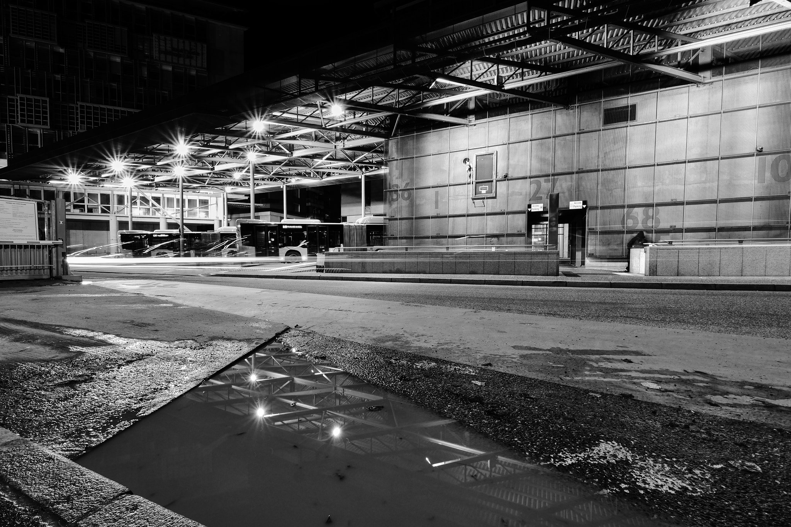
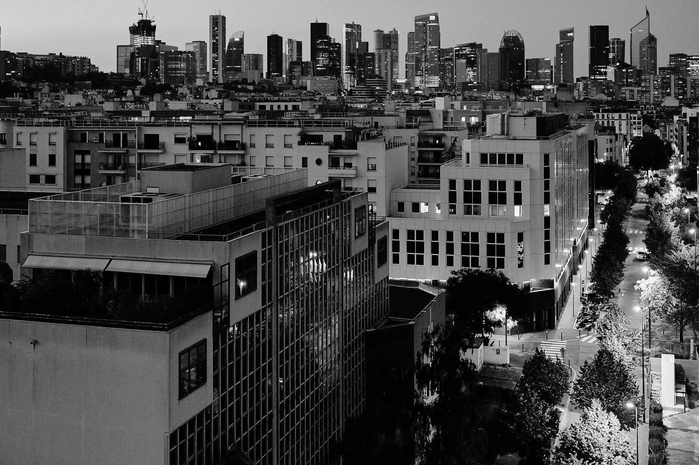
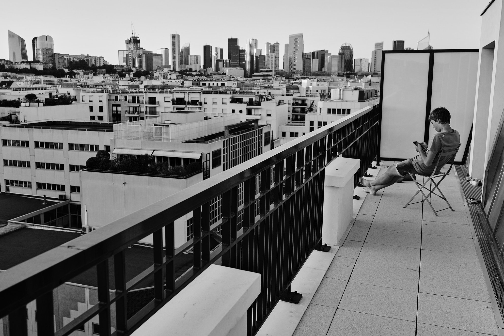
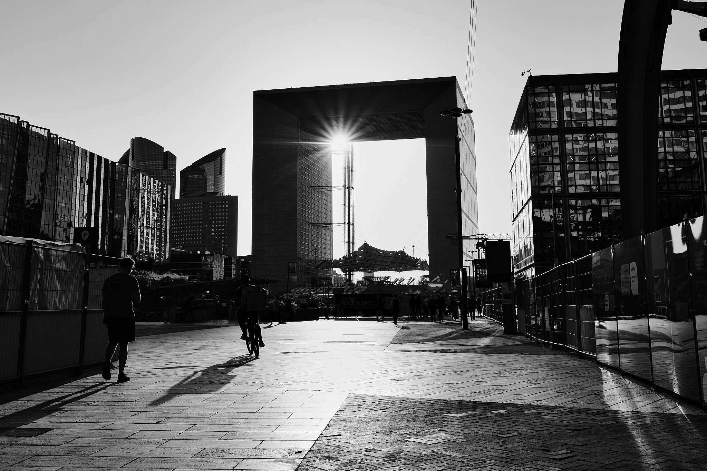
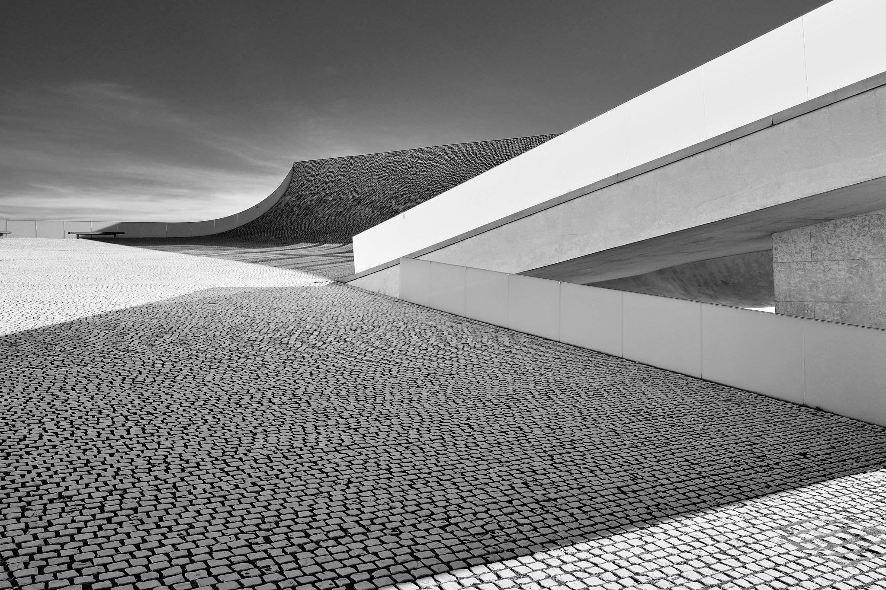
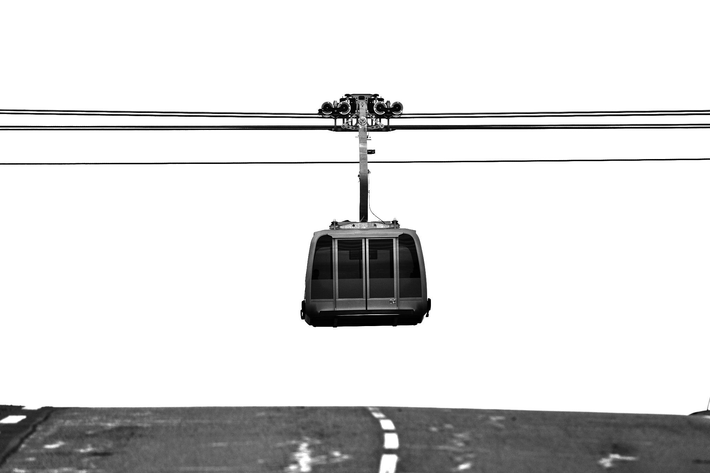
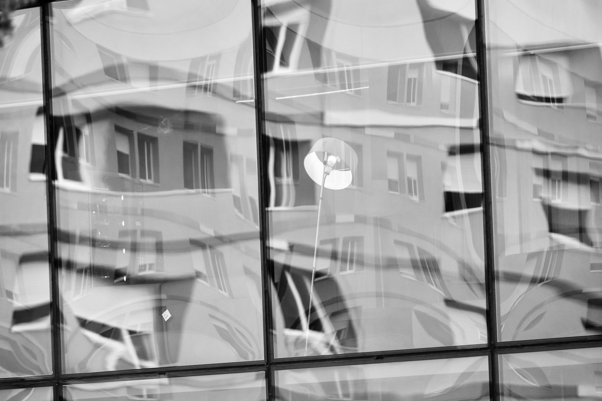

Toulouse (31) - ISO 125 1s f/6.4 8mm - FUJIFILM X-T5

Toulouse (31) - ISO 125 6.5s f/4.5 8mm - FUJIFILM X-T5

Toulouse (31) - ISO 125 6.5s f/13 8mm - FUJIFILM X-T5

Suresnes - ISO 1600 1/60s f/1.4 18mm - FUJIFILM X-T5

Suresnes - ISO 320 1/400s f/3.2 18mm - FUJIFILM X-T5

La Défense - ISO 320 1/2500s f/5.6 18mm - FUJIFILM X-T5
 La Défense - ISO 160 1/220s f/2.2 18mm - FUJIFILM X-T5
La Défense - ISO 160 1/220s f/2.2 18mm - FUJIFILM X-T5

Biarritz - ISO 320 1/850s f/5 18mm - FUJIFILM X-T5

Toulouse (31) - ISO 125 1/480s f/5.6 243mm - FUJIFILM X-T5

Toulouse (31) - ISO 1250 1/600s f/5 204mm - FUJIFILM X-T5
❮
 ❯
❯